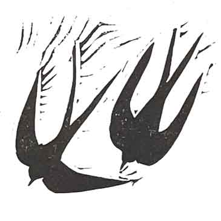

Isabel and Joe's Wedding
Saturday 3rd September 2022
Three Pools, Llanvetherine, Abergavenny NP7 8NL
The Day
The wedding will be at Three Pools – a permaculture farm near Abergavenny. If the weather allows, the
plan is for most of the day to be outside, including ceremony and dinner. The ceremony will begin at
14:00 so please arrive around 13:30. We hope that it will be seasonably warm
but it would be wise to bring some layers just in case!
There is plenty of parking on site.
TIMINGS
13:00 to 13:45 - Arrival
14:00 - Ceremony
15:00 - Reception drinks and photos
17:00 - Dinner and speeches
19:30 - Ceilidh
21:30 - Fire show
22:00 - Music in the party barn until late
Staying
There is a campsite at Three Pools, which guests are more than welcome to use for free. It’s quite rustic
but there is running water as well as long-drop loos and a shower block. Tents and camper vans are both
welcome. If glamping is more your thing then there are also bell tents available to hire from the Three Pools website.
They sleep up to four people and are furnished with single beds (inc. bedding). The price is £160 and is the
same however many people you have. If you are coming on Friday to help set-up, the price includes both
nights.
Follow this link to book: Book a bell tent
Breakfast will be provided for the campers on Sunday morning as well as the use of a wood-fired sauna
between 10:00-14:00. You can follow your sauna with a dip in one of the pools!
There are also plenty of rental properties around if you prefer not to stay under canvas. Abergavenny is
just an 11-minute drive away from Three Pools and has hotels/guesthouses and a Premier Inn.
-Info for Friday 2nd Sept helpers-
Arrival on friday after 12:00
A BBQ will be provided on Friday evening.
Please bring your own reusable water bottles, cups and plates and cutlery if you have them!
RSVP
Please let us know if you are able to come by the 30th May. When you reply, please could you tell us whether
you plan to camp on-site or not.
Gifts
Please don't feel obliged to get us a gift. However, if you want to give us something, and would appreciate
some direction, we are taking contributions towards our Honeymoon in Costa Rica